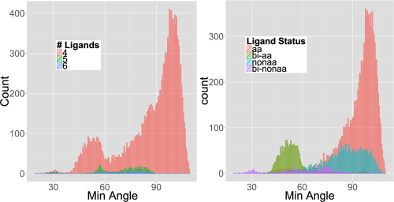

![]()

TL;DR
Currently available methods to discover metal geometries make too many assumptions. We were able to discover novel zinc coordination geometries using a less-biased method that makes fewer assumptions. These novel geometries seem to also have specific functionality. This work was recently published under an #openaccess license in Proteins Journal (Yao et al. 2015).
Zinc Coordination
As I’m sure many people know, zinc is a very important metal for biology. It is one of the most numerous metal ions, and plays a role in many different types of proteins. Zinc ions in protein structures can have anywhere from 4 to 6 ligands, in many different coordination geometries.
How the zinc ion is coordinated is going to depend on the protein sequence of amino acids that surround it, and knowledge of the protein sequence should enable knowledge of how the zinc ions are coordinated. Therefore, being able to characterize zinc ion coordination geometries (CGs) from structural data (such as protein structures in the world-wide protein data bank) and associate them with protein sequences is very important.
Previous Attempts
Other groups had done this previously, and we now have hidden-markov models for determining zinc binding thanks to this work. However, in all the cases that we could find, the determination of CG was made by comparison to previously known geometries that have been described from zinc-compound crystal structures.
When the biologically based CGs are compared to previously known, there will be a bunch of CGs that are outliers or will remain unclassified.
Our Initial Attempt
When Sen (the lead author, currently a third year PhD student in the University of Louisville Bioinformatics program) first tried to use bootstrapping and a expectation-maximization algorithm to automatically classify the zinc CGs, she started getting rather funny results, as in, why is the algorithm not converging and we are getting these huge variances in the various measures that characterize the CGs.
A single visualization was key in unlocking what was going on. Figure 2 in the paper is a histogram of the minimum angle (where angle is ligand-zinc-ligand) in degrees.

Based on Figure 1, we would expect the minimum angle to be 90, but as you can see in Figure 2, there are an awful lot of angles less than 90. We are very sure that they are real given the definition of zinc-ligand bond-length that was used to define potential ligands, and the statistical decision used to define how many ligands a given zinc ion has.
So we have a bunch of zinc-ions that make ligand-zinc-ligand bond angles at 60, and even 30 degrees! It turns out that these small angles are largely (but not all) due to bidentate ligands, where for example the zinc ion forms bonds with two oxygen’s from an aspartate or glutamate amino acid.
Separate Out Compressed and Cluster!
To make the problem tractable, we first have to separate out the compressed angle zinc sites, and then we can do clustering on the set of ligand-zinc-ligand angles to determine in a mostly un-biased fashion what CGs are present and which zinc-site belongs to which CG.
Clustering
The use of k-means clustering on the angles also required developing a way to order the ligand-zinc-ligand angles in such a way that they are comparable across all of the different CGs. The final method used in the paper was to order them using largest-sortedmiddle-opposite, which is the largest angle, the middle angles sorted in order, and lastly the opposite of the largest angle. This keeps them from being scrambled from site to site, and allows them to be comparable across zinc sites.
Also, because the number of true clusters was unknown as we are trying to discover in an unbiased way all CGs, the number of clusters was varied, and for each k-clusters, replicate clusterings done, and the stability of the clusters was assessed by cluster membership and locations across replicates.
Novel CGs
Based on all this work, we were able to compare generated clusters from both the normal and compressed groups with canonical CGs to determine if a CG from clustering corresponds to a known CG or a novel CG. The normal clusters mostly corresponded to known CGs or unsurprising variants thereof. What was really interesting is that there were multiple clusters corresponding to a tetrahedral CG. To determine if the compressed CGs were merely a compressed variant of the canonical, the compressed angle was removed from the comparison to generate a probability of assignment. At least one of the compressed groups appear to be novel, in that it has not been described before, either structurally or functionally.
Functional Characterization
We also wanted to determine if there was a functional component to the CGs, i.e. different CGs have different functionality (this is my primary but not only contribution to this manuscript). To do this we annotated all of the PDB sequences using InterProScan, and kept annotations that intersected the range of amino-acids that potentially interact with the zinc ion. This bit is tricky, because many different CGs can have many different functionality, merely doing hypergeometric-enrichment of annotations in each cluster doesn’t lead to a convincing picture; as we quickly found out (it was the first thing I tried). However, if we generate a measure of functional similarity between clusters (based on a faux covariance, really, read the paper, it is rather neat) and compare this functional cluster similarity measure with a cluster distance based on the angles, there is an extremely high Spearman correlation of 0.88 for the normal and 0.66 for the compressed CGs, implying that CG and function are intimately related.

Finally, we considered all normal and compressed clusters as separate groups and performed hypergeometric-enrichment on both the InterProScan and EC number annotations, finding enriched annotations specific to each group of clusters.
Implications
Making too many assumptions about biological structure can be a bad thing. Given that, however, if you are using canonical structures for assignment and you get a ton of outliers, maybe you need to re-examine your data and methods.
Machine learning methods such as random-forest, k-means clustering, and statistical classification can be readily used to discover and assign metal-ion CG. If you are careful, and separate out the compressed from normal first.
There is a rather tight relationship between a zinc-ion’s CG and the functionality of the protein it is embedded within.
Reproducibility
Although we have admittedly dropped the ball on this, there will be a tarball of all of the scripts used to generate the results including a README explaining how to run them available soon.
Edit: We have a tarball of the code and data used on our website and from figshare (Yao et al. 2016)
References
Yao, Sen, Robert M. Flight, Eric C. Rouchka, and Hunter N. B. Moseley. 2015. “A Less-Biased Analysis of Metalloproteins Reveals Novel Zinc Coordination Geometries.” Proteins: Structure, Function, and Bioinformatics 83 (8): 1470–87. https://doi.org/https://doi.org/10.1002/prot.24834.
Yao, Sen, Robert M Flight, Eric Rouchka, and Hunter Moseley. 2016. “Zn metalloprotein paper,” November. https://doi.org/10.6084/m9.figshare.4229333.v1.
Reuse
Citation
BibTeX citation:
@online{mflight2015,
author = {Robert M Flight},
title = {Novel {Zinc} {Coordination} {Geometries}},
date = {2015-06-17},
url = {https://rmflight.github.io/posts/2015-06-17-novel-zinc-coordination-geometries},
langid = {en}
}
For attribution, please cite this work as:
Robert M Flight. 2015. “Novel Zinc Coordination
Geometries.” June 17, 2015. https://rmflight.github.io/posts/2015-06-17-novel-zinc-coordination-geometries.